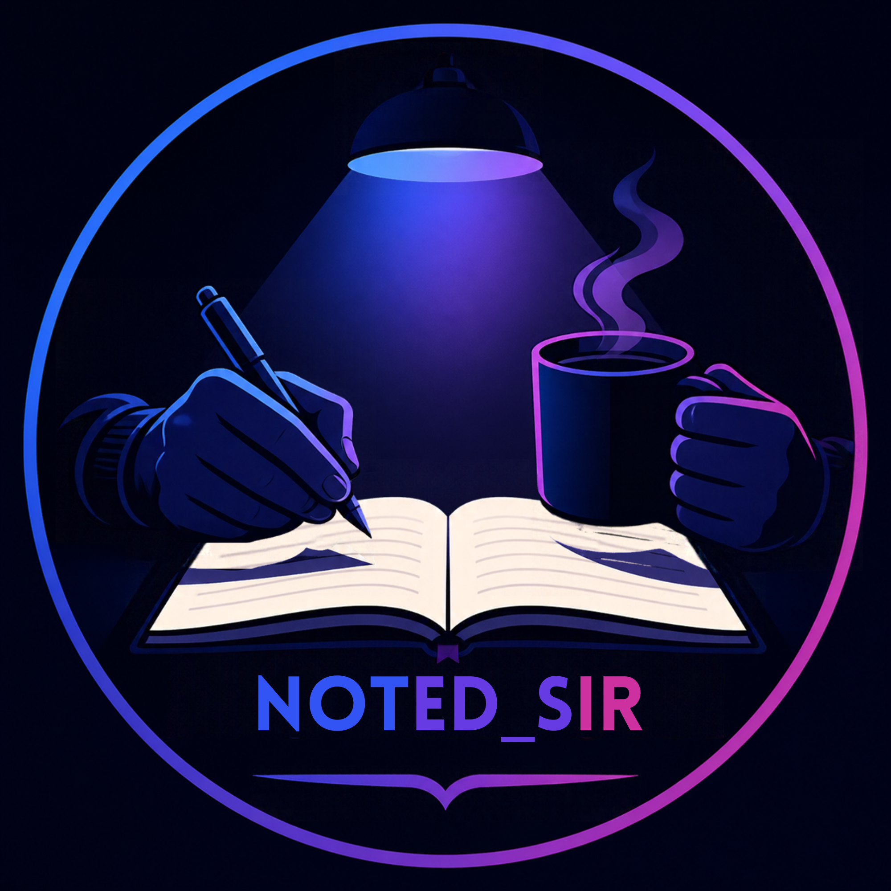

Post 01

Noted_sirA focused place for study resources, revision, PDF organization, and accessibility support.
Organize a PDF, understand the questions, and plan your own next step.
Past questions, patterns, and revision prompts in one focused place.

Slow down, notice the detail, and keep the useful pages close.

Good study tools reduce friction and protect the learner’s own voice;— Noted_sir MEANS ZERO STRESS
every focused session makes the next one lighter.